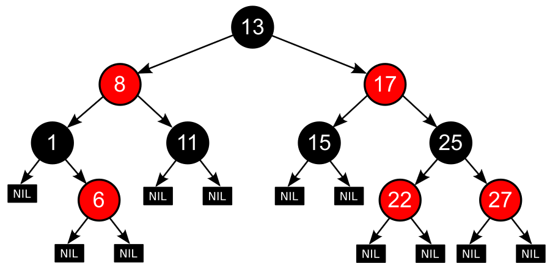

红黑树（英语：Red–black tree）是一种自平衡二叉查找树，是在计算机科学中用到的一种数据结构。它在1972年由鲁道夫·贝尔发明，被称为“对称二叉B树”，它现代的名字源于利奥尼达斯·J·吉巴斯和罗伯特·塞奇威克于1978年写的一篇论文。红黑树的结构复杂，以至于有些个别公司拿它当做面试题现场实现，但它的操作有着良好的最坏情况运行时间，并且在实践中高效：它可以在O(log^n)时间内完成查找、插入和删除。
红黑树是每个节点都带有颜色属性的二叉查找树，颜色为红色或黑色。在二叉查找树强制一般要求以外，对于任何有效的红黑树我们增加了如下的额外要求：
- 性质1: 节点是红色或黑色。
- 性质2: 根是黑色。
- 性质3: 所有叶子都是黑色（叶子是NIL节点）。
- 性质4: 每个红色节点必须有两个黑色的子节点。（或者说从每个叶子到根的所有路径上不能有两个连续的红色节点。）（或者说不存在两个相邻的红色节点，相邻指两个节点是父子关系。）（或者说红色节点的父节点和子节点均是黑色的。）
- 性质5: 从任一节点到其每个叶子的所有简单路径都包含相同数目的黑色节点。
下面是一个具体的红黑树的图例：

因为每一个红黑树也是一个特化的二叉查找树，因此红黑树上的只读操作与普通二叉查找树上的只读操作相同。
然而，在红黑树上进行插入操作和删除操作会导致不再符合红黑树的性质。恢复红黑树的性质需要少量(O(log^n))的颜色变更（实际是非常快速的）和不超过三次树旋转（对于插入操作是两次）。虽然插入和删除很复杂，但操作时间仍可以保持为O(log^n)次。
这里我们就不详细介绍红黑树了，这不是问题额度重点。重点是Go标准库中没有实现红黑树，或者说没有直接暴露一个公共的红黑树实现，我们尝试实现它。
当然，已经2042年了，G我们可以借助AI的能力，帮助我们实现一个基本的红黑树，然后我们再做调整。
我尝试使用多个AI模型，比如文心一言、通义千问、CLaude、Gemini,并借助Copilot的帮助，最终生成了一个基本的红黑树实现。
为了更高效的实现，我决定请AI模拟Rob Pike或者字节跳动的同学来实现一个红黑树,我的提示语如下：
|
|
`
我对实现不满意，所以我又尝试了一次：
|
|
这里你可以把Rob Pike换成字节跳动的同学。
基本实现了一个红黑树，我看了一下，明显Size字段没有更新，所以我让Copilot把它实现了，包括查找和遍历的方法：
|
|
它修复了一版。
默认它实现的查询和遍历的方法是采用递归的方式，层级多了栈可能会有问题或者溢出，所以我又请它按照非递归的方式实现了。
然后我又让Copliot帮我review了实现：
|
|
根据反馈的结果，又做了一些优化，比如Size在节点为空的时候不应该--等。
好了，目前我们让Rob Pike实现了这个红黑数，可以让Copilot帮我们实现单元测试。
我是每一个输出方法，单独的询问Copilot，让它生成的单元测试，比如：
|
|
执行单元测试，好真的发现了一些边界情况的处理，没检查nil的情况。
看到中间AI产生的代码包括如此多的错误，我有点不放心了，怎么办？
增加 Fuzz Test, 还是让Copilot帮我实现：
|
|
不过生成的代码有问题，我狠狠批评了Copilot，指出它的错误，让它重新生成了Fuzz Test，这次梅问题了:
|
|
`
运行Fuzz Test:
|
|
大功告成。
通过这个实践，我们可以看到AI:
- 可以让AI模拟专家的形式，生成更专业的代码
- 目前AI生成的代码还是有问题的，还需要开发者检查和甄别
- 可以让AI帮我们review代码，找出问题和优化项
- 可以让AI帮我们生成单元测试，这些枯燥的测试AI还是很擅长的
实现的RBTree代码在：rbtree.go
单元测试代码在: [rbtree_test.go][https://github.com/smallnest/exp/blob/master/container/maps/rbtree_test.go]